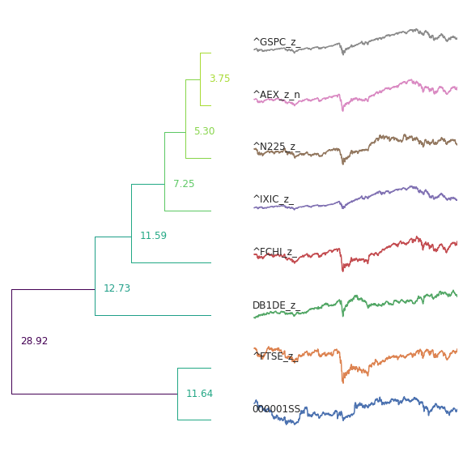

In October 2022 the Financial Times published an article suggesting that the Netherlands may have reached the limits of its growth. I intend to test this hypothesis.
Figure 1 illustrates the fact that the Netherlands has a very low unemoloyment rate compared to many of its neigbouring European nations. The low unemployment rate seen in the Netherlands is also combined with a growing number of vacant jobs in the Dutch labour market. This could indicate that the Netherlands is reaching its limits of growth as suggested by the article.
Figure 1
Figure 2 also potentially supports the idea that the Netherlands is most likely very close to its limit. It shows the 2019 Eurostat population forecasts. This simple yet effective chart emphasises the lack of population growth forecasted up to 2100.
Figure 2
The scatter plot in Figure 3 could however disprove the hypothesis. It shows the relationship between Population and GDP growth rates in Europe from 2014 to 2021. Not only does the relationship vary drastically over the period it also indicates that the correlation between the two indicators is very weak which could perhaps suggest that a levelling off in population wouldn't result in stagnant growth.
Figure 3
The bubble chart in Figure 4 compares the development of European nations by incorporating both GDP and the HDI. The chart shows that the Netherlands is both one of the largest European economies as well as one of the highest performing in the HDI. Most striking however is the size of the bubble which shows that the Netherlands is the most densely populated nation in Europe (omitting Micronations). This could contrast an initial hypothesis that an (over)densely populated country would see its HDI rating fall.
Figure 4
The trellis in Figure 4 compares the real GDP growth rates of some of the larger economies in Europe and an index for the 27 EU nations. It shows that although there are indicators which could suggest stagnating growth, the behaviour of the real GDP growth rate is still very much in line with other economies who do not have a high population density.
Figure 5
Another way of testing whether the Netherlands' economy is hitting its upper limit is testing how the companies based in the country are performing. Using machine learing I clustered time series data for the Amsterdam Exchange Index and 7 of the other largest market indices around the world across a 5 year time period and produced a Dendrogram.
The chart below shows the 8 time series for the indices labeled by thei respective ticker, and are grouped by the similarity in their behaviour. The lower the number the smaller the sum of distances.
Interestingly the Amsterdam Exchange Index (AEX) and the S&P500 (GSPC) are the most similar in behaviour. The S&P 500 is widely regarded as one of the best gauges for the entire equities market. The S&P 500 has also been one of the best performing indices in recent history and has been emblematic of the growth of the US economy. The similarity in behaviour between the S&P and the AEX is indicative of not only the strong performance of Dutch companies but also of the fact that the Netherlands has room to grow. This is in contrast to what Figure 1 might suggest about the Dutch industries.
Figure 6
Source: Yahoo Finance
Overall labour market and population demographic indicators do suggest that the Dutch economy will soon reached its ceiling of economic growth. However, there are no European examples where there is a significant correlation between a slowing of population growth and a slowing of economic growth. Furthermore, the Dutch economy as a whole and its major firms still perform in line with many of its competitors if even at times outperforming them. But this could of course be due to how intertwined the Dutch economy and markets are with the global markets due to it being a hub of trade.
Many of the obstacles with the data I used included having to tidy the data into long form using pyhton in Colab as well as concatenating certain datasets with eachother. Some of the datasets used together with others involved needing to align datasets which used overlapping but different time frames and removing certain countries for which there was incomplete data causing data to misalign itself when multiple variables were used.